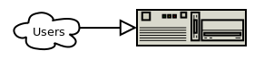
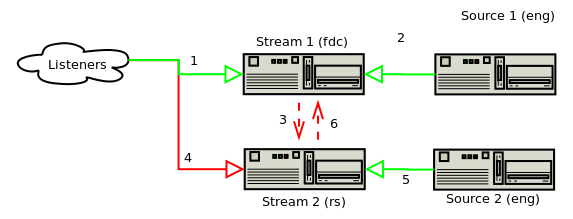
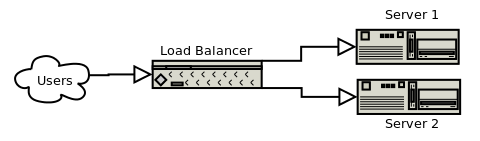
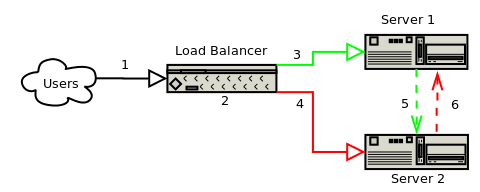
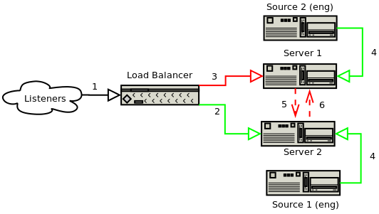
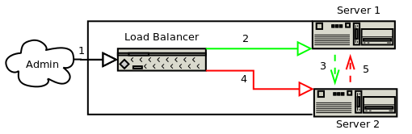
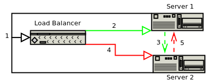

CJSW Load Balancer Proposal
This is a proposal a move away from current hosting towards a load balancer for CJSW servers.
Hosting at RackSpace and fdcservers.net will be moved to virtual private servers at OVH.ie. The VPS setup
provides the robustness of RackSpace with the unlimited bandwidth of fdcservers.net. The reduced cost
means that a dedicated load balancer is an option. Duplicate web and stream servers provide redundancies,
and the load balancer provides immediate failover and increased uptime for users.
Current Hosting
The stream is currently served from a CJSW provided server at fdcservers.net. Hardware is not redundant and failure would
cause temporary stream outage and extended downtime as the physical machine is repaired. Low level box maintenance is difficult
and expensive.
The web, db and ldap services are hosted on a RackSpace virtual server. It works well, and the infrastructure
and support of RackSpace is excellent. However, the service is expensive and there is no failover.
If any single service goes down, it results in outage while the service is fixed. Bandwidth is also very
expensive at RackSpace, which prevents running the stream from RackSpace.
The specifics of the hosting is:
- fdcservers.net streamer, unmetered 100mb bandwidth: $85/mo
- RackSpace, managed hardware, limited bandwidth: $139/mo
Total: $224/mo
Suggested Hosting
Three Virtual Private Servers are to be purchased from OVH.ie.
Everything can be managed online and the enterprise grade hardware is managed by the hoster. No worries of downtime throughout
entire infrastructure.
- 2xServer: Level 6, with Linux and 100GB HD upgrade. 3ghz, 4GB RAM. 2x$89/mo, $178/mo
- 1xLoad Balancer: Level 3, with Linux. 1.5ghz, 1GB RAM. 1x$38/mo.
Total: $216/mo
Improved redundancy and uptime at less cost.
I will require a couple weeks to implement the proposal and test it prior to switch over.
For this month there will be service overlap, after which the old services can be left.
Service Comparison
In the following sections, the current and proposed configurations are described and
compared.
Current Services
The current CJSW web service looks like this:

Web requests are serviced by a single machine (running ubuntu)
with web server (apache), database (mysql) and LDAP server (apache ds).
While the server is solid due to the RackSpace infrastructure, it is a single point of failure. If
the server or any of the critical services fail, there will be down time to fix the problem.
The current CJSW stream infrastructure is:

- Requests are made directly to Stream 1
- Stream 1 is provided from Source 1
- If Source 1 goes down, Stream 2 is used as a fallback
- Should Stream 1 go down, DNS is manually updated to direct requests to Stream 2
- Stream 2 is provided by Source 2
- Should Source 2 drop, stream is pulled from Stream 1 (if available)
The disadvantages of this approach are that a manual DNS update is required should a major
error occur and, in practice, the failover on source dropout does not occur with reliability and
requires debugging. Reliability is good in comparison to previous configurations, but could
be better.
Typical Load Balancer Details
This is a typical load balancer configuration for illustration purposes. The custom implementation for CJSW expands on
this as indicated.
- requests are received by the balancer and relayed to the servers
- should a server go down, or be down for maintenance the outage is automatically detected
and the traffic is routed to the functioning server
- once the repair is complete, the server once again becomes part of the pool
- the way that requests are routed to servers is configurable and will vary according to the service
- the servers are identical mirrors, each running a web, stream database and LDAP instances
- The primary advantage of a load balanced setup is increased uptime.
A server can fail or be taken down without affecting use from the user perspective.
It also allows for easier maintenance. A load balancer setup is not trivial however
There is more work involved in configuration and maintenance.

Web Configuration
Web requests are biased to Server 1. Updates are propagated to Server 2.
Database requests for dynamic pages should go through load balancer.
Server affinity is enabled to ensure proper functioning of web applications.
- A request is made for a web page (port 80)
- The message is intercepted and session stickyness is established (http). All traffic will go to the same machine
- All traffic is routed to Server 1 by default
- If Server 1 is down, traffic is routed to Server 2
- A background task ensures that changes made on Server 1 are propagated to Server 2
- When Server 1 comes back up, changes from Server 2 are propagated to Server 1

Stream Configuration
Stream requests are biased to Icecast on Server 2, so as to distribute processing among the servers.
Server affinity is not required. Connections are long-lived and as such reliability and
overhead on the load balancer must be considered.
- A request is made for the stream (http://stream.cjsw.com/cjsw.mp3)
- The request is passed unaltered (tcp) to Server 2, which provides the
stream. All traffic passes through the load balancer, which might be a
future capacity issue
- If Server 2 is down, requests are passed to Server 1. When Server 2 returns
requests are passed to Server 2
- Each server is tied to the corresponding source in the engineering
room at CJSW
- If Source 1 goes down, Server 1 is used as the source and listeners are
not disconnected.
- If Source 2 goes down, Server 2 is used as the source and listeners are
not disconnected

Database (MySQL) Configuration
The database should be replicated across all servers and should be biased
towards Server 1. Replication is required to maintain synchronisation.
Database clustering could be investigated as a further optimisation as it would
better distribute load (but with increased configuration)
- A request is made for the database (port 3306) probably due
to a web request from Server 1 or Server 2, but may also be from
an administrator or external service
- All requests are passed to the mysql instance on Server 1
- Updates on the Server 1 database are replicated to Server 2
- If Server 1 is down, requests are passed to Server 2
- When Server 1 comes back up, all changes stored on Server 2
are replicated to Server 1 on startup.

Authentication (LDAP) Configuration
LDAP requests are handled by Apache DS and show affinity to Server 1.
There is no replication in Apache DS, so synchronisation will have
to be maintained via a custom mechanism. LDAP is only accessible to the servers.
There is no external access (except via SSH tunnel from one of the servers)
- A request is made for LDAP (port 10389) from one of the servers (or via SSH tunnel)
- LDAP request is passed to Server 1
- A custom service replicates changes to Server 2
- Requests are routed to Server 2 if Server 1 goes down
- On return of Server 1, newer entries are pulled from Server 2

Unanswered Questions
There are a few unanswered questions.
- The load balancer must be evaluated for long running http streams. All
traffic will go through the load balancer, and it must be quick enough.
- Automatic stream switchover on source failure must be tested
- File synchronization must be configured for server files (rsync in cron)
- Replication for database must be configured and tested
- LDAP synchronization services must be built and tested
- Performance must be evaluated